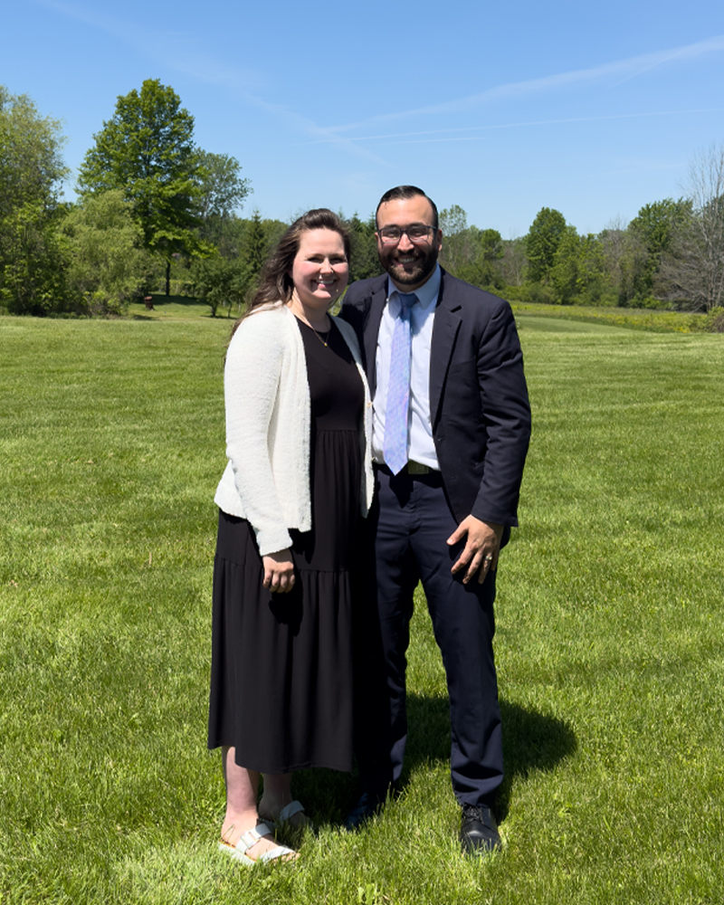
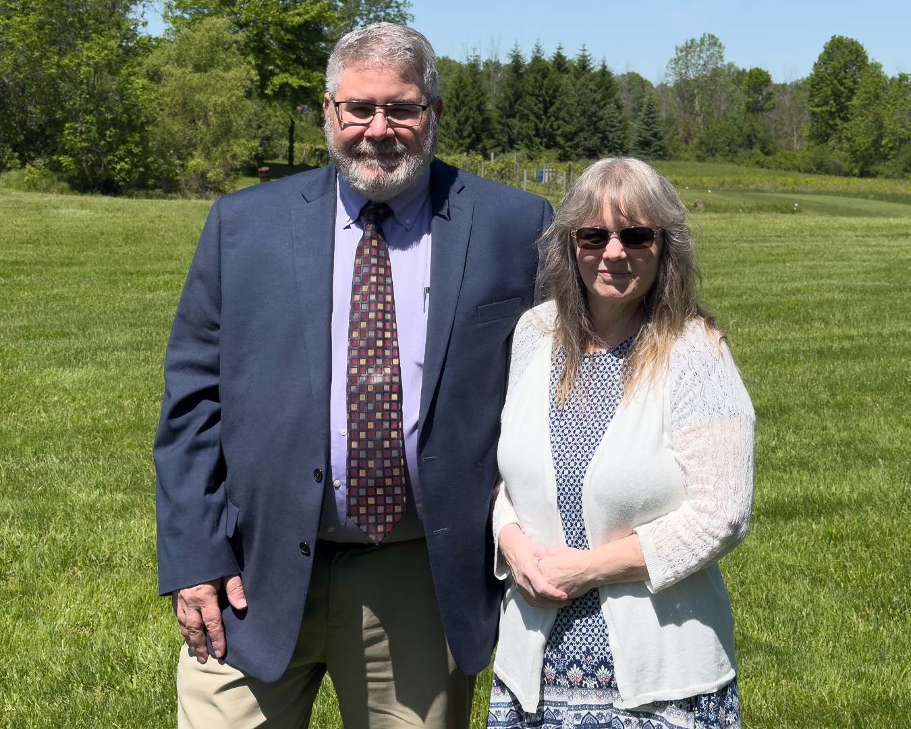
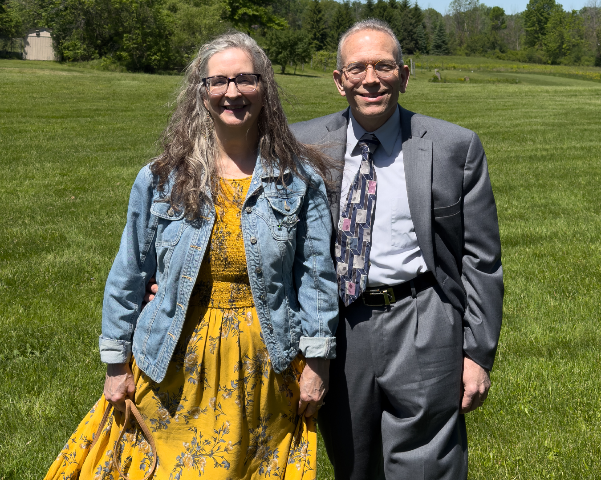
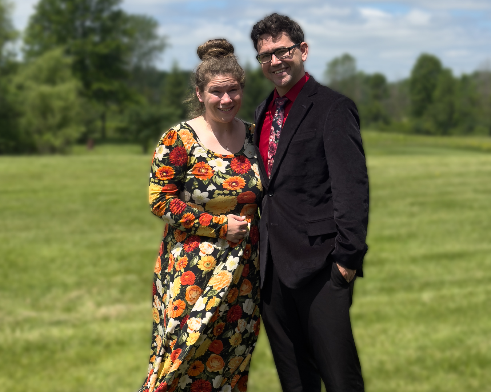
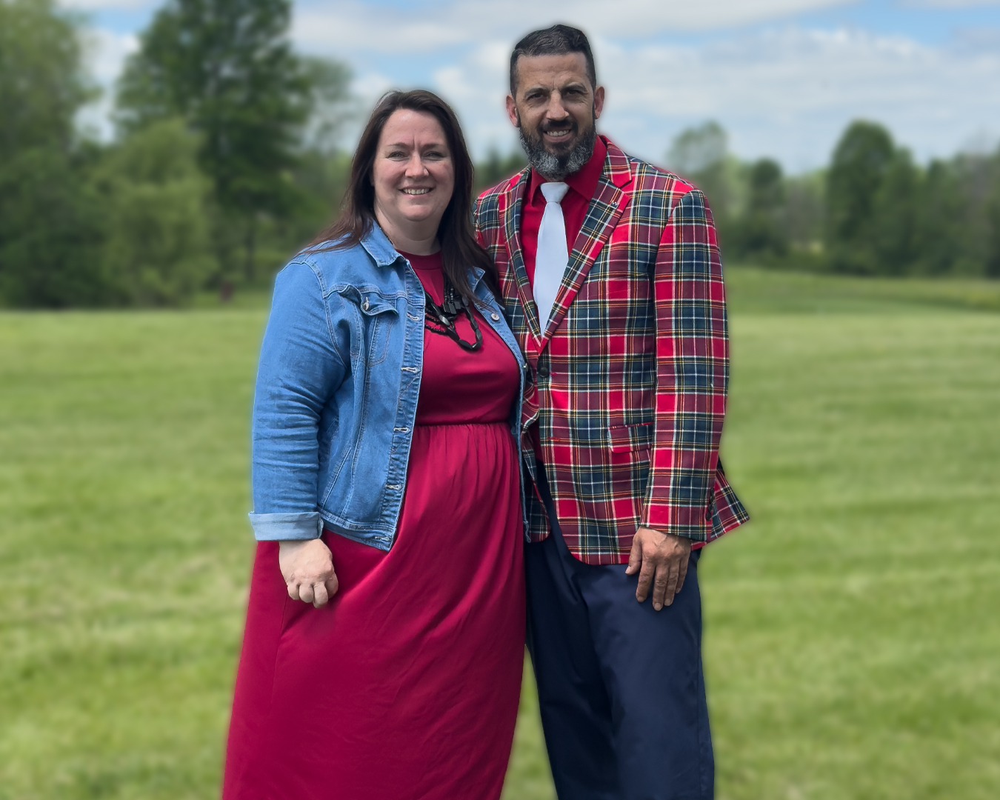

Blessed Hope Baptist Church
The men and women who serve this church family.
Pastoral Leadership

Senior Pastor
Pastor Josh came to Blessed Hope in 2024, sent and supported by New Heights Baptist Church in Tulsa, Oklahoma. He preaches the Word of God every Sunday and teaches in the Next Up Sunday School class alongside Cody Sumeriski. His desire is simple: to be faithful to the Scripture and useful to the Lord in Genesee County.
Kara serves alongside him in the work of the ministry. She plays piano for the congregation, organizes the nursery schedule, and gives herself to the daily needs of the church family. Together they have three children, Elianna, Vincenzo, and Toby.
Sunday School Ministry
These men and women give their time every Sunday morning to teach the Word of God. We are grateful for each one of them.
Sunday School Administrator

Sunday School Administrator & Faith in Focus Co-Teacher
Phil and Diane have been members of Blessed Hope for over twenty years. Phil brings a warm, comedic energy to everything he does, and his leadership style puts people at ease. He coordinates the Sunday School program and co-teaches the Faith in Focus adult class with Nathaniel Lake.
Class Teachers
Bright Beginnings Teacher
Ages 2 – Pre-K
Lori has been working with children in ministry for quite some time and has a genuine gift for it. She knows how to come down to their level and pour her heart into whatever portion of Scripture is being taught, making the Word of God accessible and real for young hearts.

Truth Chasers Teacher
1st – 6th Grade
Paul has been in ministry for many years, including time as a missionary to Nova Scotia. He has a rare ability to read any room and communicate the Bible clearly to any age group. His experience and faithfulness make him an invaluable part of our Sunday School team.

Next Up Teacher
7th – 12th Grade
Cody and Kaylee both grew up in the church and have had a heart to serve for as long as they can remember. They are always ready to jump in with the youth and genuinely love young people. That comes through every Sunday in the Next Up class.

Faith in Focus Co-Teacher
College – Adulthood
Nathaniel co-teaches the Faith in Focus adult class alongside Phil Floyd and plays piano for the congregation. He and Abby are always ready to jump in wherever they are needed, and they contribute quietly and faithfully to the work of the ministry week after week.
Support Ministry
Every Sunday there are people working behind the scenes to keep the ministry running so that nothing gets in the way of the gospel going forward. We are thankful for each one of them.
Church Facilities & Maintenance
Charles and Alexa are always ready to fill in and contribute to the work in whatever way is needed. Charles keeps the facility running and handles whatever comes up, while Alexa serves as Church Treasurer, overseeing the financial stewardship of the ministry. Their faithfulness behind the scenes keeps things moving.
Graphic Designer & Media Director
Elijah serves as Media Director and Print Manager at Blessed Hope with a heart for his home church and for helping churches in general. He operates Kindled Studio, a personal design and print business that serves churches and ministries. He is grateful to put those gifts to work here at Blessed Hope.
Visit Kindled StudioWe are always looking for faithful people to serve. If you have a heart to contribute to the ministry of Blessed Hope, we would love to talk with you.
Plan Your Visit